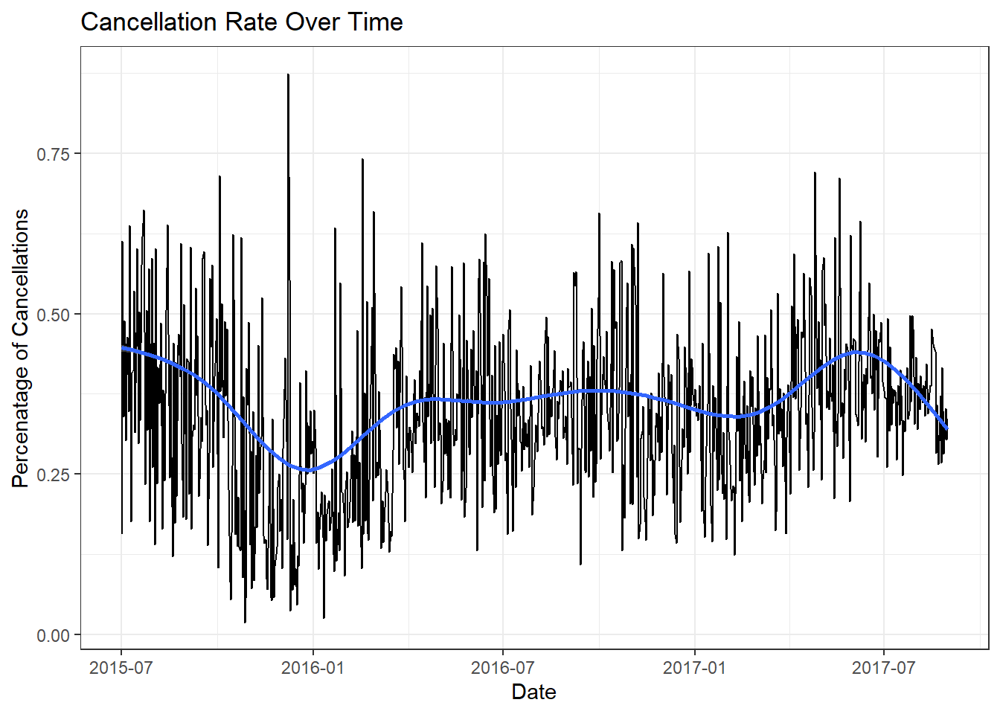

Code
library(tidyverse)
library(lubridate)
knitr::opts_chunk$set(echo = TRUE)Daniel Hannon
April 24, 2023
#:| Read in the Data and Fix the Dates
hotel_original <- read.csv("_data/hotel_bookings.csv")
hotel_tidy <- hotel_original %>% #Fix the three date columns into one Column
mutate(arrival_date = ymd(paste(arrival_date_year, arrival_date_month, arrival_date_day_of_month, sep= "_"))) %>%
select(-c(hotel, arrival_date_year, arrival_date_month, arrival_date_day_of_month, lead_time, meal, booking_changes, adr, required_car_parking_spaces, total_of_special_requests, reservation_status, reservation_status_date))
head(hotel_tidy) is_canceled arrival_date_week_number stays_in_weekend_nights
1 0 27 0
2 0 27 0
3 0 27 0
4 0 27 0
5 0 27 0
6 0 27 0
stays_in_week_nights adults children babies country market_segment
1 0 2 0 0 PRT Direct
2 0 2 0 0 PRT Direct
3 1 1 0 0 GBR Direct
4 1 1 0 0 GBR Corporate
5 2 2 0 0 GBR Online TA
6 2 2 0 0 GBR Online TA
distribution_channel is_repeated_guest previous_cancellations
1 Direct 0 0
2 Direct 0 0
3 Direct 0 0
4 Corporate 0 0
5 TA/TO 0 0
6 TA/TO 0 0
previous_bookings_not_canceled reserved_room_type assigned_room_type
1 0 C C
2 0 C C
3 0 A C
4 0 A A
5 0 A A
6 0 A A
deposit_type agent company days_in_waiting_list customer_type arrival_date
1 No Deposit NULL NULL 0 Transient 2015-07-01
2 No Deposit NULL NULL 0 Transient 2015-07-01
3 No Deposit NULL NULL 0 Transient 2015-07-01
4 No Deposit 304 NULL 0 Transient 2015-07-01
5 No Deposit 240 NULL 0 Transient 2015-07-01
6 No Deposit 240 NULL 0 Transient 2015-07-01The first step in tidying the data is to fix the dates, which was done when reading in the data. The data present is very long with lots of columns to look at. In this brief study, I am going to be looking at what variables affect customer cancellations, so many of these columns will stay in the dataset. In order to make the graphs, I will pivot temporarily for each graph because there are so many variables to test, and keeping them in the original wide format will be necessary for doing time evolution graphs. Also in order to get an accurate measure of cancellation rates, I will mutate the data to include a new column that is the percent cancellation based on the grouping of variables that are being observed and graphed.
The first two graphs below will set the baseline of cancellation rates. The First shows that cancellation rates have remained mostly steady over the two years of collected data, with a dip around January 2016, and some small rises around June of 2015 and 2017, but the rate stays mostly consistent at around 37%. The second graph shows the cancellation percent on different weeks in the year, showing that there tends to be a higher cancellation rate in ther summer and spring compared to winter and fall.
hotel_tidy %>% ##Plot of Cancellation Rate over time
select(is_canceled, arrival_date)%>%
group_by(arrival_date)%>%
add_count(name= "total") %>%
mutate(cancellation_percent= sum(is_canceled)/total) %>% #Strange Peak at 12/08/15
ggplot(aes(x=arrival_date, y=cancellation_percent))+
geom_line(show.legend = TRUE)+
geom_smooth()+
theme_bw()+
labs(title= "Cancellation Rate Over Time", x= "Date", y= "Percenatage of Cancellations")`geom_smooth()` using method = 'gam' and formula = 'y ~ s(x, bs = "cs")'
hotel_tidy %>% #Plot of Cancellation Rate Based on Time of Year
select(is_canceled, arrival_date_week_number)%>%
group_by(arrival_date_week_number)%>%
add_count(name= "total") %>%
mutate(cancellation_percent= sum(is_canceled)/total) %>%
ggplot(aes(x=arrival_date_week_number, y=cancellation_percent))+
geom_line(show.legend = TRUE)+
geom_smooth()+
theme_bw() +
labs(title= "Cancellation Rate Throughout The Year", x= "Week of the Year", y= "Percenatage of Cancellations")`geom_smooth()` using method = 'gam' and formula = 'y ~ s(x, bs = "cs")'Going off of these basic trends, we can look at specific column values to see if factoring on them changes shows any new relations.
hotel_tidy %>% ##Plot of Cancellation Rate over time
select(is_canceled, arrival_date_week_number, customer_type)%>%
group_by(arrival_date_week_number, customer_type)%>%
add_count(name= "total") %>%
mutate(cancellation_percent= sum(is_canceled)/total) %>%
ggplot(aes(x=arrival_date_week_number, y=cancellation_percent, color = customer_type))+
geom_smooth(show.legend = TRUE)+
theme_bw()+
labs(title= "Cancellation Rate by Customer Type Throughout The Year", x= "Week of the Year", y= "Percenatage of Cancellations", color= "Customer Type")`geom_smooth()` using method = 'gam' and formula = 'y ~ s(x, bs = "cs")'Above we can see that transient customers have a much higher cancellation rate when compared to other customers. Also it is interesting to see the during the spike in cancellations seen at week 20 in the total graph, contract customer actually have the lowest cancellation rate. We can also see a large increase in Group customer cancellations as the year goes on, with a big increase at around week 38.
hotel_tidy %>% ##Plot of Cancellation Rate for Customer type and Deposit type
select(is_canceled, deposit_type, customer_type)%>%
group_by(deposit_type, customer_type)%>%
add_count(name= "total") %>%
mutate(cancellation_percent= sum(is_canceled)/total) %>%
ggplot(aes(x= customer_type, y= cancellation_percent, fill = deposit_type)) +
geom_bar(position= "dodge", stat= "identity", show.legend = TRUE)+
geom_text(aes(label=total), position=position_dodge(width=0.9), vjust=-0.2) +
theme_bw()+
labs(title= "Cancellation Rate by Deposit and Customer Type", subtitle= "The number above each bar indicates the number of observations of that variable combination", x= "Customer Type", y= "Percenatage of Cancellations", fill= "Deposit Type")As we have seen previously, transient customers have the highest cancellation rate, but what we can see from this graph is that across all customer types, there is nearly a 100% cancellation rate for non-refundable deposits. This is contrary to what I would have assumed which would be that the non-refundable deposit would lead to a higher incentive to not cancel. There is also a high refundable cancellation rate but there are very few observations of refundable deposits, and the group with the highest number of refundable deposits has a low cancellation rate of bookings with them.
---
title: "Advanced Vizualizations"
author: "Daniel Hannon"
desription: "Created Mulitvariate Visualizations using the Hotel Data"
date: "04/24/2023"
format:
html:
toc: true
code-fold: true
code-copy: true
code-tools: true
categories:
- challenge_7
- Daniel Hannon
- hotels
---
```{r}
#| label: setup
#| warning: false
library(tidyverse)
library(lubridate)
knitr::opts_chunk$set(echo = TRUE)
```
## Read in the Data
```{r}
#:| Read in the Data and Fix the Dates
hotel_original <- read.csv("_data/hotel_bookings.csv")
hotel_tidy <- hotel_original %>% #Fix the three date columns into one Column
mutate(arrival_date = ymd(paste(arrival_date_year, arrival_date_month, arrival_date_day_of_month, sep= "_"))) %>%
select(-c(hotel, arrival_date_year, arrival_date_month, arrival_date_day_of_month, lead_time, meal, booking_changes, adr, required_car_parking_spaces, total_of_special_requests, reservation_status, reservation_status_date))
head(hotel_tidy)
```
## Tidy the Data
The first step in tidying the data is to fix the dates, which was done when reading in the data. The data present is very long with lots of columns to look at. In this brief study, I am going to be looking at what variables affect customer cancellations, so many of these columns will stay in the dataset. In order to make the graphs, I will pivot temporarily for each graph because there are so many variables to test, and keeping them in the original wide format will be necessary for doing time evolution graphs. Also in order to get an accurate measure of cancellation rates, I will mutate the data to include a new column that is the percent cancellation based on the grouping of variables that are being observed and graphed.
## Vizualizations
The first two graphs below will set the baseline of cancellation rates. The First shows that cancellation rates have remained mostly steady over the two years of collected data, with a dip around January 2016, and some small rises around June of 2015 and 2017, but the rate stays mostly consistent at around 37%. The second graph shows the cancellation percent on different weeks in the year, showing that there tends to be a higher cancellation rate in ther summer and spring compared to winter and fall.
```{r}
hotel_tidy %>% ##Plot of Cancellation Rate over time
select(is_canceled, arrival_date)%>%
group_by(arrival_date)%>%
add_count(name= "total") %>%
mutate(cancellation_percent= sum(is_canceled)/total) %>% #Strange Peak at 12/08/15
ggplot(aes(x=arrival_date, y=cancellation_percent))+
geom_line(show.legend = TRUE)+
geom_smooth()+
theme_bw()+
labs(title= "Cancellation Rate Over Time", x= "Date", y= "Percenatage of Cancellations")
hotel_tidy %>% #Plot of Cancellation Rate Based on Time of Year
select(is_canceled, arrival_date_week_number)%>%
group_by(arrival_date_week_number)%>%
add_count(name= "total") %>%
mutate(cancellation_percent= sum(is_canceled)/total) %>%
ggplot(aes(x=arrival_date_week_number, y=cancellation_percent))+
geom_line(show.legend = TRUE)+
geom_smooth()+
theme_bw() +
labs(title= "Cancellation Rate Throughout The Year", x= "Week of the Year", y= "Percenatage of Cancellations")
```
Going off of these basic trends, we can look at specific column values to see if factoring on them changes shows any new relations.
```{r}
hotel_tidy %>% ##Plot of Cancellation Rate over time
select(is_canceled, arrival_date_week_number, customer_type)%>%
group_by(arrival_date_week_number, customer_type)%>%
add_count(name= "total") %>%
mutate(cancellation_percent= sum(is_canceled)/total) %>%
ggplot(aes(x=arrival_date_week_number, y=cancellation_percent, color = customer_type))+
geom_smooth(show.legend = TRUE)+
theme_bw()+
labs(title= "Cancellation Rate by Customer Type Throughout The Year", x= "Week of the Year", y= "Percenatage of Cancellations", color= "Customer Type")
```
Above we can see that transient customers have a much higher cancellation rate when compared to other customers. Also it is interesting to see the during the spike in cancellations seen at week 20 in the total graph, contract customer actually have the lowest cancellation rate. We can also see a large increase in Group customer cancellations as the year goes on, with a big increase at around week 38.
```{r}
hotel_tidy %>% ##Plot of Cancellation Rate for Customer type and Deposit type
select(is_canceled, deposit_type, customer_type)%>%
group_by(deposit_type, customer_type)%>%
add_count(name= "total") %>%
mutate(cancellation_percent= sum(is_canceled)/total) %>%
ggplot(aes(x= customer_type, y= cancellation_percent, fill = deposit_type)) +
geom_bar(position= "dodge", stat= "identity", show.legend = TRUE)+
geom_text(aes(label=total), position=position_dodge(width=0.9), vjust=-0.2) +
theme_bw()+
labs(title= "Cancellation Rate by Deposit and Customer Type", subtitle= "The number above each bar indicates the number of observations of that variable combination", x= "Customer Type", y= "Percenatage of Cancellations", fill= "Deposit Type")
```
As we have seen previously, transient customers have the highest cancellation rate, but what we can see from this graph is that across all customer types, there is nearly a 100% cancellation rate for non-refundable deposits. This is contrary to what I would have assumed which would be that the non-refundable deposit would lead to a higher incentive to not cancel. There is also a high refundable cancellation rate but there are very few observations of refundable deposits, and the group with the highest number of refundable deposits has a low cancellation rate of bookings with them.